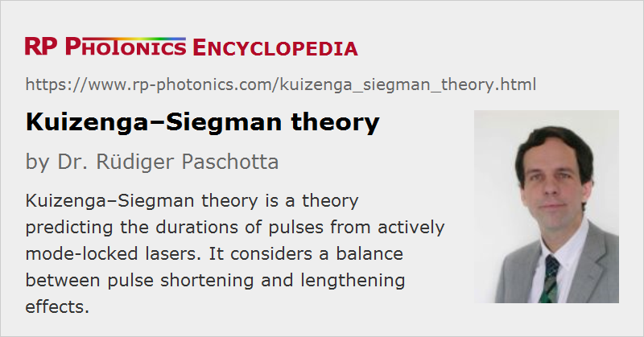

Kuizenga–Siegman Theory
Definition: a theory predicting the durations of pulses from actively mode-locked lasers
German: Kuizenga-Siegman-Theorie
How to cite the article; suggest additional literature
Author: Dr. Rüdiger Paschotta
The Kuizenga–Siegman theory [1] is a theoretical treatment which can be used for calculating the pulse duration of an actively mode-locked laser. The basic underlying idea is that active mode locking involves two competing mechanisms acting on the duration of the circulating pulse:
- The modulator causes a slight attenuation of the wings of the pulse, effectively reducing the pulse duration.
- Due to its limited gain bandwidth, the gain medium tends to reduce the bandwidth of the pulse and thus to increase the pulse duration.
Note that for decreasing pulse duration the pulse-shortening effect of the modulator becomes less effective, whereas the pulse-broadening effect of the gain medium becomes more effective. For a certain pulse duration, both effects are in a balance, and this determines the steady-state pulse duration (see Figure 1).
The quantitative treatment based on this idea lead Kuizenga and Siegman to a relatively simple equation for calculating the steady-state pulse duration:
where g is the intensity gain, M is the modulation strength, fm is the modulator frequency (which is assumed to match the round-trip frequency), and Δνg is the FWHM gain bandwidth. This equation is subject to a number of assumptions (which will not be discussed in detail here), but generalizations for other situations are possible.
This result shows that e.g. driving the modulator more strongly will hardly decrease the pulse duration. For shorter pulses, passive mode locking is much more effective. In that case, the blue curve in Figure 1 can be replaced with a steep straight line for the saturable absorber, which shifts the intersection point far to the left.
Questions and Comments from Users
Here you can submit questions and comments. As far as they get accepted by the author, they will appear above this paragraph together with the author’s answer. The author will decide on acceptance based on certain criteria. Essentially, the issue must be of sufficiently broad interest.
Please do not enter personal data here; we would otherwise delete it soon. (See also our privacy declaration.) If you wish to receive personal feedback or consultancy from the author, please contact him e.g. via e-mail.
By submitting the information, you give your consent to the potential publication of your inputs on our website according to our rules. (If you later retract your consent, we will delete those inputs.) As your inputs are first reviewed by the author, they may be published with some delay.
Bibliography
| [1] | D. J. Kuizenga and A. E. Siegman, “FM and AM mode locking of the homogeneous laser – Part I: Theory”, IEEE J. Quantum Electron. 6 (11), 694 (1970), doi:10.1109/JQE.1970.1076343 |
| [2] | D. J. Kuizenga and A. E. Siegman, “FM and AM mode locking of the homogeneous laser – Part II: experimental results in a Nd:YAG laser with internal FM modulation”, IEEE J. Quantum Electron. 6 (11), 709 (1970), doi:10.1109/JQE.1970.1076344 |
See also: active mode locking, mode locking, mode-locked lasers, pulse duration, pulse propagation modeling
and other articles in the category light pulses
|  |
If you like this page, please share the link with your friends and colleagues, e.g. via social media:
These sharing buttons are implemented in a privacy-friendly way!